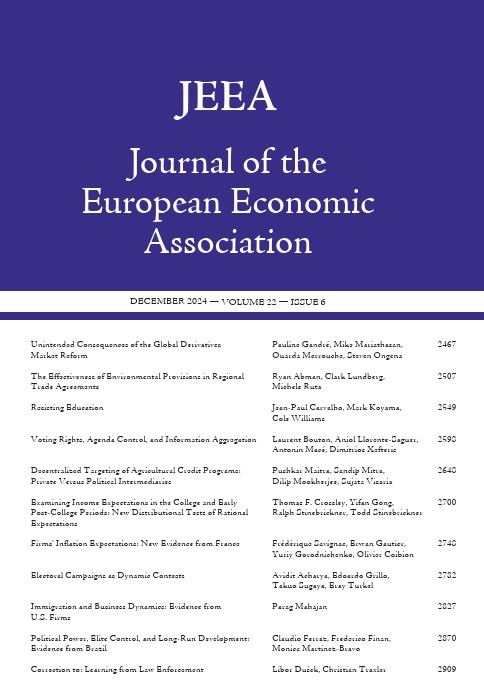

The Value of Names - Civil Society, Information, and Governing Multinationals
Forthcoming @ Journal of the European Economic Association
Selected Coverage: OHCHR, Quartz, Mongabay, Oxford Arts Blog, Monash Lens
· Appendix · synthReturn · BibTeX · Replication Package
Can markets discipline socially costly misbehavior abroad? We explore the market penalty associated with major human rights violations—specifically, the assassination of mining activists, a context where formal legal recourse is rare and events often do not involve counterparties. We show that firms featured in media coverage of these incidents experience significant, negative abnormal stock returns. Whereas reactions to related forms of corporate misconduct may be transitory or muted, we find that the market responses are both substantial and persistent, with a median 10-day loss exceeding USD 100 million. Since formal legal sanction is exceedingly rare, we consider the role of market penalties. We highlight three mechanisms that are consistent with reputational costs: (1) Media attention magnifies the market response. (2) Information-sensitive institutional investors systematically divest following assassination events. (3) Events reduce future trade, leading to a 19% decline in new contracts with counterparties. Despite these costs, events persist. We find that assassinations increase with dependence on mining royalties, suggesting that local rents sustain conflict despite market pressure. Thus, reputational sanctions may be significant—even in weakly institutionalized settings—yet may not fully deter misbehavior when local and global incentives diverge.